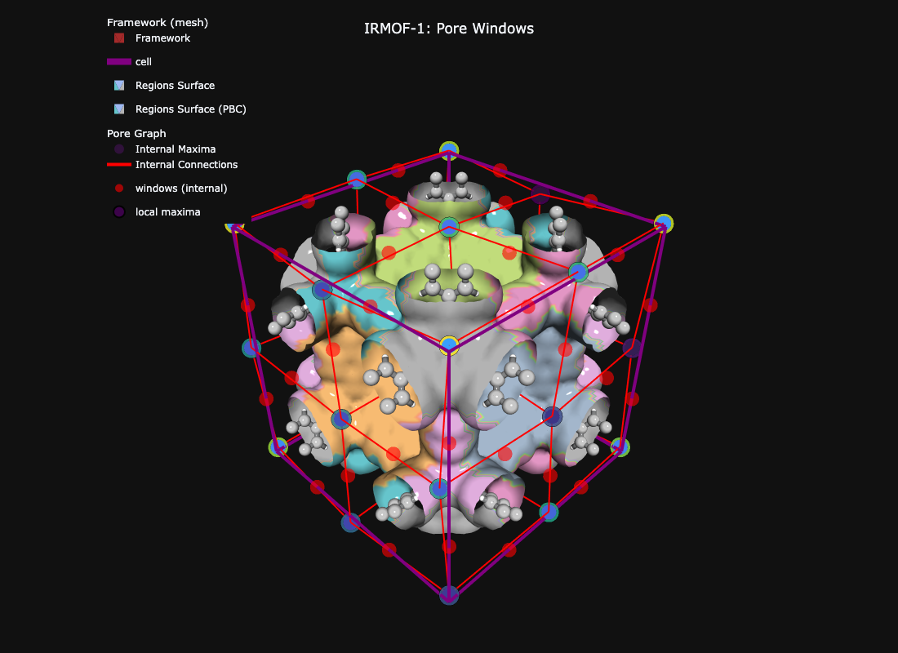

Show code
import mofography as mgr
from ase.io import read
import numpy as np
import plotly.graph_objects as go
import plotly.express as px

Pore windows (also called connections or neck regions) are the narrow passages that connect neighboring pores in a crystalline material. In mofography, every connection in the segmentation result is a 5-tuple describing two touching regions, the type of contact, the window centroid, and the window radius.
In this tutorial we will:
compute_connections=True so that windows are detected automatically.seg['connections'] — the list of 5-tuples describing every window.show_mof_plotly(seg, atoms, ...), which already includes window markers.If you have not done so, please complete the Quick Start: Full MOF Pore Analysis tutorial first — the rest of the page assumes you have run a segmentation and have a seg dict in hand.
A window is the centroid of points in the shared boundary of two adjacent pore regions. The detection algorithm distinguishes two contact types:
| Type | Description | In pore graph |
|---|---|---|
| Internal | Both regions lie fully inside the unit cell | Edge between nodes |
| Periodic | One region sits across a unit-cell boundary | Edge with an offset |
When two regions touch at multiple distinct points, mofography reports each window separately. The minimum spatial gap between two distinct windows is controlled by the minimum_window_separation parameter (Å). Internally this is an agglomerative-clustering distance threshold on the boundary points.
import mofography as mgr
from ase.io import read
import numpy as np
import plotly.graph_objects as go
import plotly.express as pxdgrid_from_atoms_rust is the thread-parallel Rust backend — the correct choice for every cell type.
atoms = read("IRMOF-1.cif")
spacing = 0.5 # Å — see Quick Start for trade-offs
dgrid = mgr.dgrid_from_atoms_rust(atoms, spacing=spacing)
print(f"Grid shape: {dgrid.shape} ({dgrid.size:,} voxels)")
print(f"Void max: {dgrid.max():.1f} Å")Grid shape: (52, 52, 52) (140,608 voxels)
Void max: 7.5 ÅSet compute_connections=True (default) so that the same call returns both the segmentation grid and the window list. The relevant tuning knobs for window detection are:
minimum_window_separation (Å) — distance threshold that splits boundary points into distinct windows. Default is None, which the function resolves internally; pass an explicit value to control window multiplicity.wall_thickness — near-boundary band, as a fraction of the longest perpendicular cell length (not Å), used to filter maxima.extra_padding (Å) — extra padding around the unit cell so that periodic windows are not clipped.dgrid_f32 = dgrid.astype(np.float32)
seg = mgr.do_periodic_segmentation_rust(
dgrid_f32, atoms,
spacing=spacing,
mask_thickness=0.05, # void-space threshold (Å)
h=0.2, # H-maxima persistence
min_distance=1.5, # min separation between distinct maxima (Å)
threshold_abs=1.5, # absolute threshold for maxima (Å)
minimum_window_separation=1.5, # Å — see "Tuning" section below
wall_thickness=0.05, # Å
extra_padding=5, # Å — PBC padding for window detection
compute_connections=True, # detect windows + build pore graph
watershed_backend="rust_det",
disable_tqdm=True,
)
print(f"Pockets (PBC-grouped): {len(seg['maxima_pbc'])}")
print(f"Unique regions: {len(seg['unique_regions'])}")
print(f"Window connections: {len(seg['connections'])}")Pockets (PBC-grouped): 8
Unique regions: 27
Window connections: 300seg['connections']The connections entry is a list of numpy arrays, one per window. Each array has five elements:
| Index | Meaning |
|---|---|
c[0] |
Two region labels that the window connects |
c[1] |
Confirmation flag (currently always True for a detected window) |
c[2] |
'internal' or 'periodic' |
c[3] |
Window centroid coordinates (shape (1, 3)) |
c[4] |
Window radius in Å (shape (1,)) |
connections = seg["connections"]
c = connections[0]
print("Type: ", type(c).__name__)
print("Length: ", len(c))
print("c[0] regions:", c[0])
print("c[1] flag: ", c[1])
print("c[2] type: ", c[2])
print("c[3] centre: ", c[3])
print("c[4] radius: ", c[4], "Å → diameter =", float(c[4][0]) * 2, "Å")Type: ndarray
Length: 5
c[0] regions: [49 83]
c[1] flag: True
c[2] type: periodic
c[3] centre: [[ 33.53192308 -12.916 38.748 ]]
c[4] radius: [3.67783356] Å → diameter = 7.3556671142578125 Ådo_periodic_segmentation_rust reports every window it finds in the padded analysis domain, including windows between regions that only exist in the padding. To get a single, non-over-counted set of connections inside the unit cell, keep the windows that touch at least one region in unique_regions.
unique_regions = seg["unique_regions"]
connections_trimmed = np.array([
c for c in connections
if np.any(np.isin(c[0], unique_regions))
])
print(f"All detected windows: {len(connections)}")
print(f"Unit-cell windows: {len(connections_trimmed)}")All detected windows: 300
Unit-cell windows: 108internal = [c for c in connections_trimmed if c[2] == "internal"]
periodic = [c for c in connections_trimmed if c[2] == "periodic"]
print(f"Internal: {len(internal)}")
print(f"Periodic: {len(periodic)}")
# Window positions and radii
all_radii = np.array([float(c[4][0]) for c in connections_trimmed])
all_centres = np.array([c[3].flatten() for c in connections_trimmed])
all_diameters = 2.0 * all_radiiInternal: 54
Periodic: 54print("=" * 50)
print("WINDOW SIZE STATISTICS")
print("=" * 50)
print(f"Total windows: {len(all_diameters)}")
print(f"Pore Limiting Diam.: {all_diameters.min():.3f} Å")
print(f"Largest diameter: {all_diameters.max():.3f} Å")
print(f"Mean diameter: {all_diameters.mean():.3f} Å")
print(f"Median diameter: {np.median(all_diameters):.3f} Å")
print("=" * 50)==================================================
WINDOW SIZE STATISTICS
==================================================
Total windows: 108
Pore Limiting Diam.: 7.356 Å
Largest diameter: 7.914 Å
Mean diameter: 7.632 Å
Median diameter: 7.420 Å
==================================================The PLD (min diameter) is the smallest window in the unit cell — it is a hard upper bound on the diameter of a sphere that can diffuse through a single repeating cell of this MOF.
show_mof_plotlyshow_mof_plotly consumes the full seg dict, so window markers come along for the ride. There is no need to call plot_connections_as_it_is separately — pass stylize=True for a clean dark theme and fig.show() to render the interactive Plotly figure inline.
fig = mgr.show_mof_plotly(
seg, atoms,
framework_atoms=atoms,
stylize=True,
)
fig.update_layout(title=dict(text="IRMOF-1: Pore Windows", x=0.5))
fig.write_image("tutorial_images/connections_and_windows_windows.png", width=1100, height=800) # static preview for the docsNo node props provided, using default set: [position, scaled_position, element and atomic_number]
No edge properties provided. Use the default set: [bond_order, bond_type]
[TIMING batched_mesh_for_atoms] 472 atoms, 1024 bonds | spheres: 0.00s, cylinders: 0.00s, concat: 0.00s | total faces: 212480No node props provided, using default set: [position, scaled_position, element and atomic_number]
No edge properties provided. Use the default set: [bond_order, bond_type]
fig = mgr.show_mof_plotly(seg, atoms, framework_atoms=atoms, stylize=True)
fig.show() # rotate, zoom, hover over windowsYou should see:
Because the figure is a Plotly Figure (in the interactive version), you can rotate, zoom, and hover over each window to read its region labels, contact type, and diameter directly from the metadata baked into the trace.
A quick sanity check on the size distribution:
fig3 = px.histogram(
x=all_diameters,
nbins=25,
labels={"x": "Window diameter (Å)"},
title="IRMOF-1: Distribution of window diameters",
color_discrete_sequence=["steelblue"],
)
fig3.add_vline(
x=all_diameters.min(),
line_dash="dash",
line_color="red",
annotation_text=f"PLD = {all_diameters.min():.2f} Å",
)
fig3.update_layout(showlegend=False)
fig3.show()For IRMOF-1 you should see a narrow, roughly symmetric peak centred near the mean diameter, with the red dashed line marking the PLD at the left tail.
minimum_window_separationThis parameter is the distance threshold that the internal agglomerative clustering uses to split boundary points into distinct windows. Concretely:
minimum_window_separation Å are not merged → fewer, more distinct windows per region-pair.None (default) → the function chooses a sensible internal default. Set it explicitly whenever you have a domain-specific expectation (e.g. you know two apertures must be resolved).If the windows appear in the wrong positions, or two clearly distinct windows are being merged into one, start by adjusting minimum_window_separation before re-tuning h or threshold_abs.
| Symptom | Likely cause | Fix |
|---|---|---|
| No connections found | compute_connections=False, or segmentation produced a single region |
Re-run with compute_connections=True; relax h / threshold_abs |
| Windows appear in the wrong positions | Boundary points being merged across distinct apertures | Lower minimum_window_separation |
| Too few windows overall | Over-aggressive merging | Raise minimum_window_separation and/or relax h |
| Periodic windows clipped | Padding too small | Increase extra_padding |
| Window radii are noisy | Boundary points straddling multiple regions | Lower wall_thickness and rerun |
These notes document experimental refinements on top of the basic connections list:
Mechanism A / Mechanism B PLD distinction, optional DFSD signals, and prototype window-type detection.